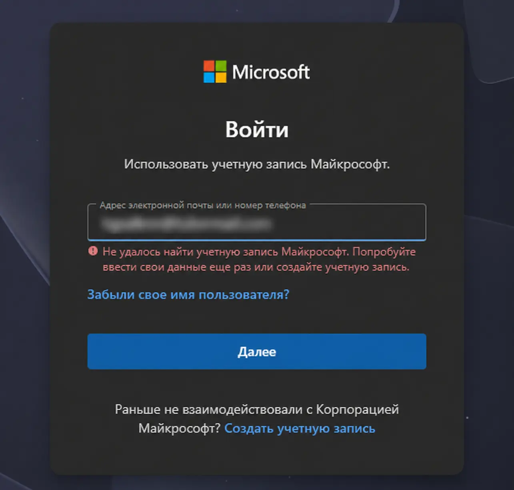
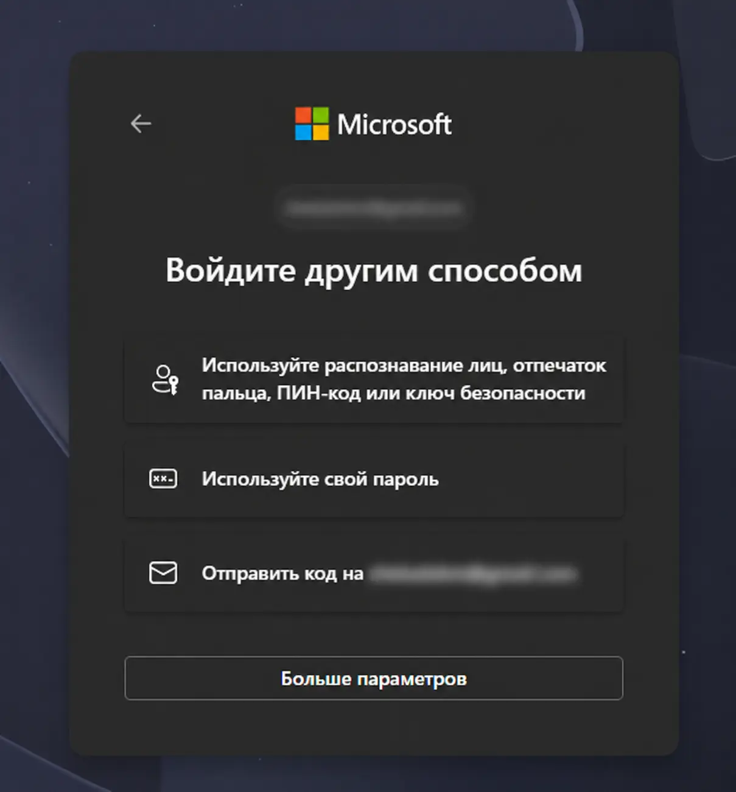
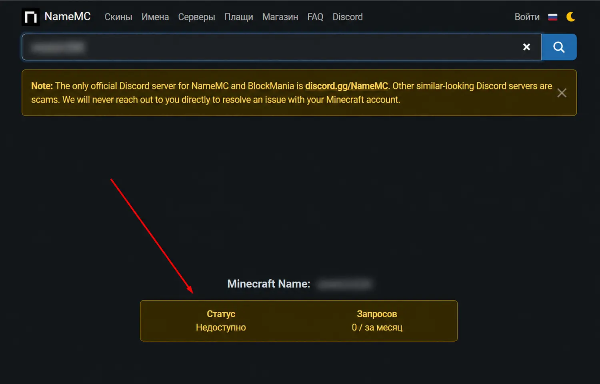
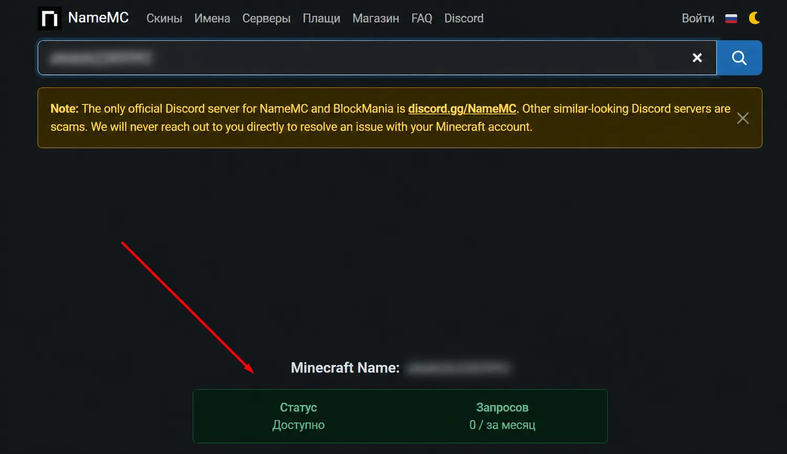

Почта
Не привязанная к Microsoft и Xbox
Для оформления заказа понадобятся три пункта. Подготовьте их заранее и отправьте одним сообщением в чат заказа.
Не привязанная к Microsoft и Xbox
Пароль или одноразовый код для входа
Свободный ник до 16 символов
Заполните три строки и пришлите их продавцу после оплаты.
Если до начала выполнения заказа вы не отправите никнейм, продавец установит произвольный. Отсутствие никнейма в чате означает ваше согласие с этим условием.
Нужно убедиться, что на выбранную почту ещё не зарегистрированы учётная запись Microsoft и профиль Xbox.
Откройте microsoft.com в режиме инкогнито.
Нажмите кнопку входа и введите почту, на которую хотите получить лицензию.
Сравните результат с примерами ниже.
Если Microsoft показывает ошибку «Не удалось найти учётную запись», эта почта не привязана и её можно отправлять продавцу.

Если Microsoft предлагает пароль, код или другой способ входа, почта уже привязана. Для заказа необходимо выбрать другую.

Пароль от почты не менее важен. Перед отправкой откройте сайт своей почты в режиме инкогнито и попробуйте войти с указанным паролем.
Если почтовый сервис позволяет войти с помощью одноразового кода, проверять пароль необязательно. Во время выполнения заказа отправьте полученный код продавцу в чат.
Откройте NameMC, введите желаемый ник и посмотрите его статус. Никнейм должен содержать не более 16 символов.


Нажмите на вопрос, чтобы открыть ответ.
Использование VPN, Zapret и других средств обхода ограничений во время входа или игры нежелательно. Как указано в описании товара, смена IP-адреса или региона может вызвать проверку Microsoft, повторную авторизацию или ограничение доступа к аккаунту.
Возможные риски использования таких программ покупатель принимает на себя.
Сначала попробуйте другой браузер, перезагрузите роутер или подключитесь к другой сети.
Если сервис всё равно не открывается, VPN можно использовать только при крайней необходимости и на свой страх и риск. Выберите один стабильный сервер, не переключайте страны и не выполняйте много попыток авторизации подряд.
Заказ выполняется через браузер в режиме инкогнито. После завершения продавец выходит из аккаунта и закрывает окно, поэтому данные входа и локальная сессия на его устройстве не сохраняются.
После выполнения заказа продавец больше не пользуется аккаунтом. Повторный вход возможен только по просьбе покупателя, если потребуется помощь.
Нет. Для выполнения заказа нужна почта, которая ранее не использовалась для регистрации учётной записи Microsoft и к которой не привязан профиль Xbox.
Если на почте уже зарегистрирован Microsoft-аккаунт или создан профиль Xbox, необходимо предоставить другую почту.
Да. После успешной проверки входа вы можете самостоятельно изменить пароль, почту, основной адрес, регион, резервную почту, номер телефона и другие данные безопасности.
Согласование изменений с продавцом не требуется.
Сначала рекомендуется скачать официальный Minecraft Launcher для Windows. Если новая версия не устанавливается или не запускается, нажмите «Ищете другую версию? Смотреть ниже» и скачайте Windows Legacy.
После успешного входа также можно использовать сторонние лаунчеры для Java Edition:
Скачивайте лаунчеры только с официальных сайтов и выбирайте вход через Microsoft.
Перезагрузите компьютер, проверьте интернет и попробуйте другую сеть или браузер. Убедитесь, что дата и время на компьютере установлены правильно.
Если сервис недоступен без VPN, учитывайте предупреждение из описания товара: использование VPN и средств обхода ограничений происходит на ваш страх и риск.
Если ничего не помогло, отправьте продавцу скриншот проблемы.
Проверьте правильность почты и пароля, раскладку клавиатуры, Caps Lock и отсутствие лишних пробелов. Убедитесь, что в Microsoft Store и Minecraft Launcher выбран один и тот же аккаунт.
Не пытайтесь многократно вводить пароль или самостоятельно восстанавливать аккаунт. Отправьте продавцу полный скриншот ошибки — по нему будет проще определить причину.
Почта, доступ к ней и желаемый никнейм — одним сообщением в чат заказа.